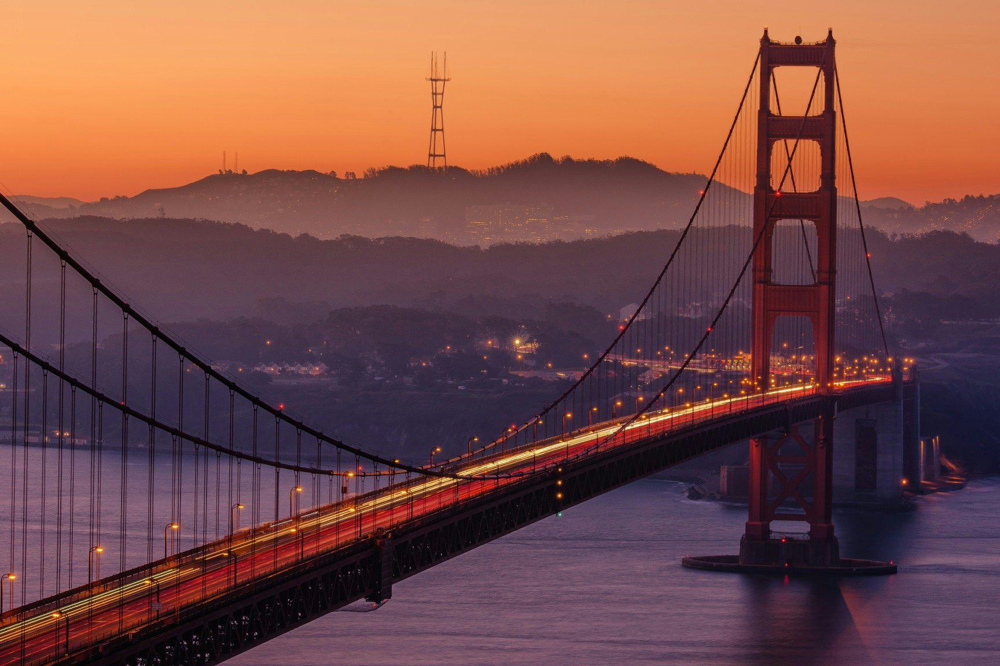
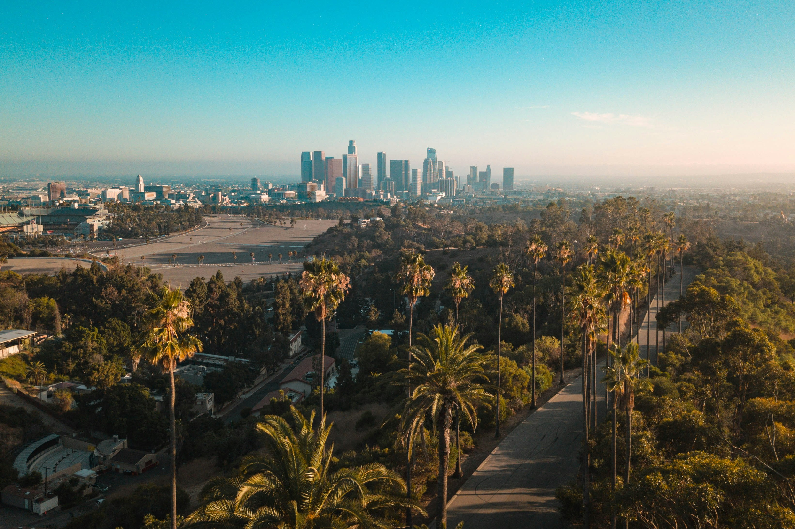
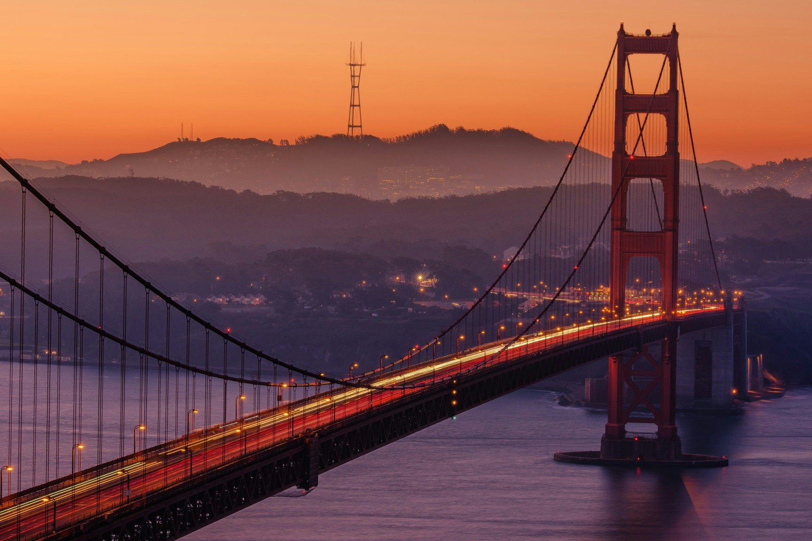
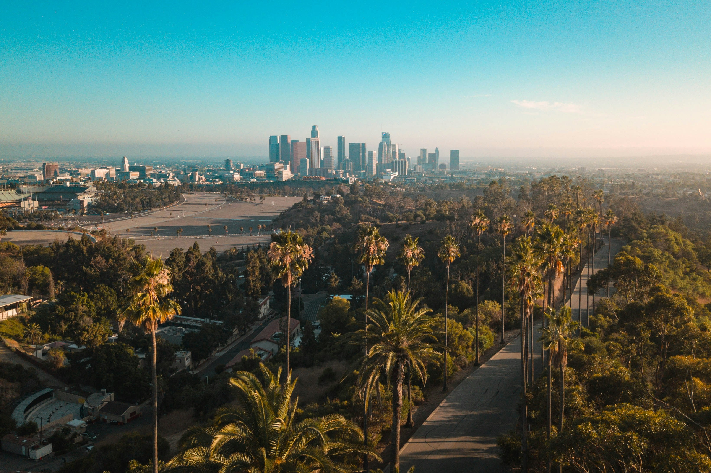

MY TOP 2 PLACE I WANT TO VISIT IS USA
 



I really want to visit the United States because it has so many different places to see. New York City is like a big city with tall buildings, lots of shows, and Times Square where everything is so busy. But then there's also the Grand Canyon and Yellowstone National Park, which are really peaceful and beautiful. Each part of the country is different, like the friendly cities in the South, the pretty Northwest, and the adventurous Rocky Mountains. The USA is also cool because it has lots of museums, music, and food to enjoy. Museums in places like Washington D.C. and Chicago show how creative Americans are. Cities like New Orleans and Nashville have awesome music scenes with jazz and country music. And the food is amazing, from simple diners with big breakfasts to fancy restaurants with all kinds of tasty dishes. Visiting the USA means you can see history, enjoy different cultures, and eat delicious food, making it a great trip for anyone.
Back